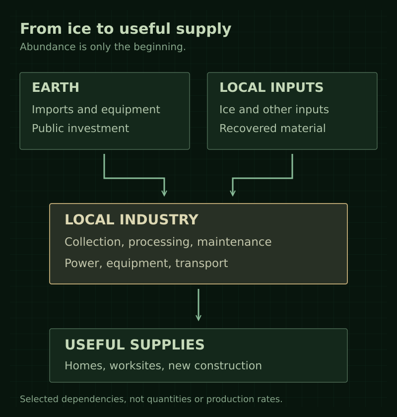

Lore / Economy
Economy
Saturn's economy is growing through Earth-backed development, local industry, and the promise of a permanent home. Its success creates both genuine opportunities and leverage for those who control useful supplies.
Expansion and investment
Colonization combines raw-material extraction, industrial investment, jobs, and the promise of a permanent home.
Earth finances infrastructure and guarantees major contracts. Private companies earn income from building and operating the settlement network while seeking long-term control of facilities and markets. Saturn's economy is not yet expected to support itself. Public investment supports infrastructure and the imports needed for expansion.
The boom is still accelerating. Facilities open, workers arrive, and some people genuinely improve their lives. The project has real achievements. Exploitation is not merely a response to economic collapse; it occurs within a project that is succeeding for its owners.
Local industry and imports
Production initially serves Saturn itself. Extraction feeds material processing, construction, maintenance, transport, storage, and the supplies needed by growing settlements. Local production of water, oxygen, and food, along with recycling and applied research, helps reduce dependence on Earth. Housing and local services grow alongside these industries.
The rings are ice-rich, not a convenient field of metal ore. Ice provides a basis for water, oxygen production, and bulk shielding. Its role in propellant production depends on drive technology that is not yet specified. Metals, precision machinery, electronics, and other inputs cannot simply be assumed to exist in accessible local deposits. Early industry depends substantially on imports, with selected moon operations serving specific resource needs.
Abundant raw material does not guarantee abundant usable supplies. Collection, processing, power, equipment, and transport can limit production. A settlement can be close to immense quantities of ice while depending on someone else's plant for clean water.
{kind=link}

Independent operators and salvage
A small, lawful independent sector exists alongside the major employers. Its earliest members are mainly established small contractors expanding their operations to Saturn. Locally founded companies also exist without an Earth parent, including businesses started by former employees of major operators.
Crew-owned, debt-financed ships provide a difficult but real route out of company employment. Crews can pool resources and use contracted income to help secure financing. They do not need to buy an interplanetary transport outright; smaller local work vessels can serve the station network.
Independence does not mean freedom from debt or corporate power. Operators remain vulnerable to lenders, major customers, and access to supplies and facilities. They can choose customers and build something they own, but losing a major contract can still destroy the business. Most employees cannot simply afford to become independent.
Salvage is a legitimate trade, not another word for piracy. Chance finds are not assumed to provide an easy route to ship ownership. Independent crews are not automatically rebels, and pirates are not automatically liberators. Civilian, industrial, military, and salvage roles do not establish four unified political factions.
The frontier offers genuine opportunity under unequal conditions: precarious ownership, powerful employers, and institutions that struggle or refuse to protect everyone equally.
Research
Public-service research institutions coexist with company laboratories. Some have a duty to improve settlement health and safety, although funding and political pressure can compromise that work.
Applied research supports the expansion: food production, air and water systems, resource processing, and other local industrial needs. Laboratories and pilot-production facilities belong where their work benefits from the location, including selected moon outposts. Particular sites, projects, and propellant processes remain open.
Research can provide evidence about whether an operator's safety claims are true. A public-service mandate does not guarantee independence in practice or that officials will act on the findings.
Details still open
Particular resource deposits, production rates, and the long-term balance between local production, imports, exports, and public funding have not been established. Named research institutions, projects, and detailed commercial relationships remain open.